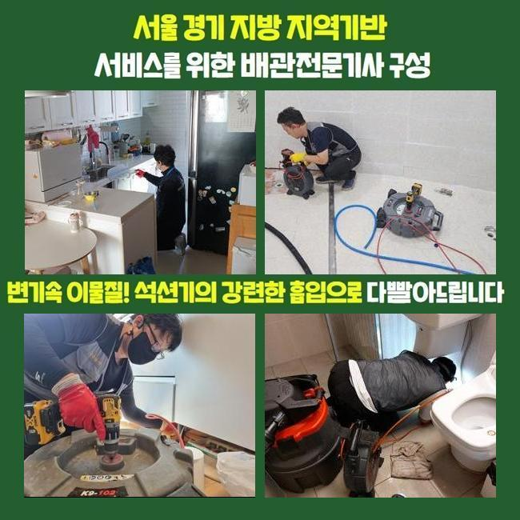
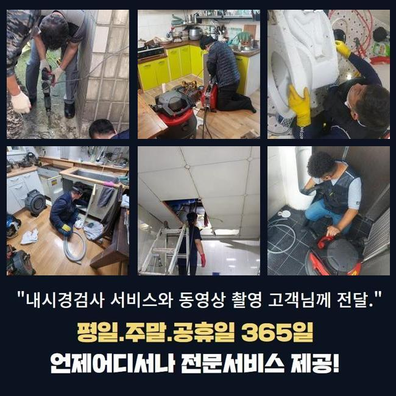
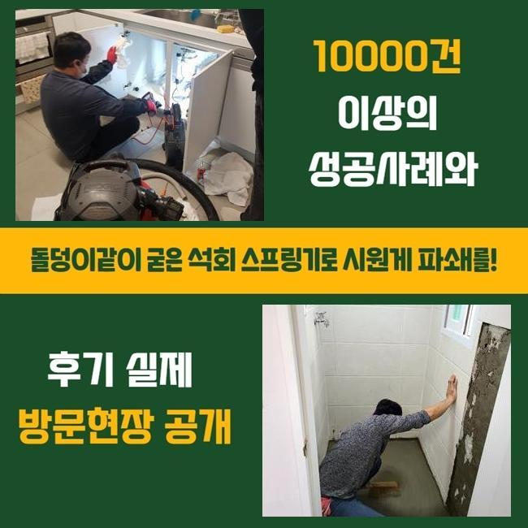
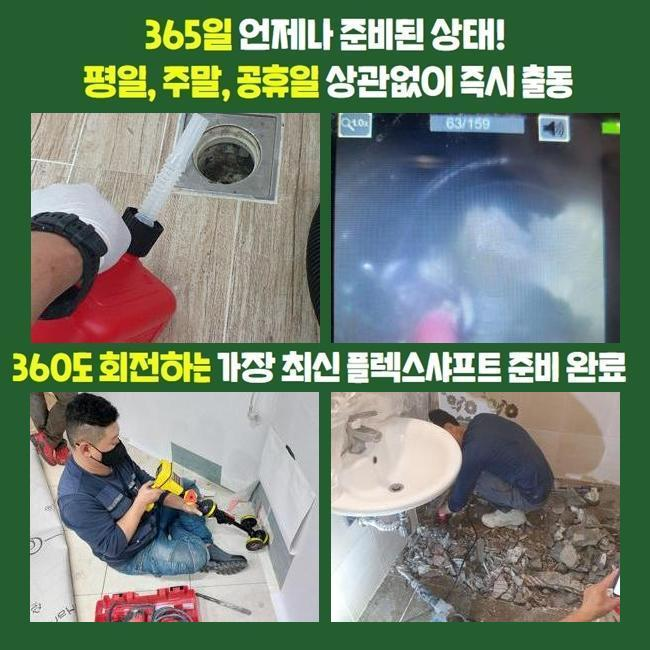
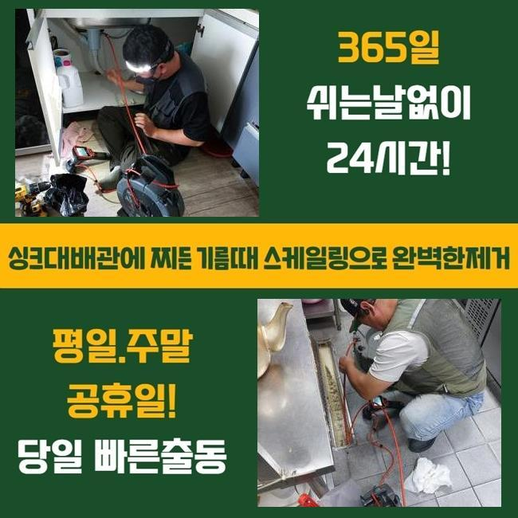
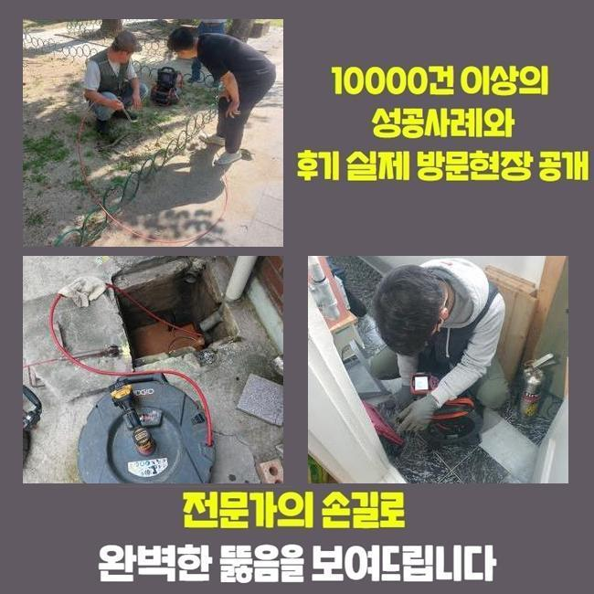

🏠 강서구 구로구 씽크대배수구역류 금천구 배수로뚫기 배관뚫는업체
서울 금천구 싱크대막힘 전문 시공 후기

📋 작업 개요
- 위치: 서울 금천구, 금천구, 서울
- 서비스 유형: 싱크대막힘, 하수구막힘, 배관막힘, 누수수리, 역류해결, 뚫는업체, 배관청소, 설비공사
- 작업 일시: 2024. 11. 25. 23:03
- 업체명: 하수구수사대 (010-5615-2118)
🔍 문제 상황
강서구 구로구 씽크대배수구역류 금천구 배수로뚫기 배관뚫는업체
금일에는 배관의 고장이 발생해 굴착작업으로 정리한 케이스를 말씀드려볼까 해요
보통 작업과 상이하게 이런 일에는 여러가지의 불확실성이 포괄돼있다는걸 말씀드려요
건물소유자셨던 의뢰인께선 근래에 상가안에 거주하시는 분들로부터 하수구로 배수가 안된다는 여러 불평에 곤란한 상황이시라면서 신속하게 정리해달라고 전화해주셨어요
공동관로가 막힌다면 그쪽과 관련된 위치에선 물흐름이 정상으로 이루어지기가 매우 힘들죠
1개의 하수관이 여러 고객들에게 불편함을 유발하는거죠
이것을 컨트롤하는 분들은 그런 종류의 문제들을 당면한다면 매우 갑갑하실겁니다
그래서 배관전문가를 통하여서 빠르게 처리하시는게 좋습니다
시일이 늦어진다면 피해정도를 늘어나게할수 있어요
혹여 해당상황에서 비용적 이슈로 인해 수선을 미루어버린다면 나중에 막대한 문제가 나타날수가 있습니다
신속히 고장을 처치해 드리기 위하여 장비들을 챙긴후에 고객님이 계신곳으로 출동했습니다
의뢰인분에게 간단한 이야기를 듣고 막힘위치로 이동했어요
저흰 시공전날 선제적으로 내방을 드렸으며 검사를 하고나서 공사할 지점을 선정해 두었답니다
그리고나서 고객님의 생각을 청취한뒤 사람이 비교적 적은 다음날의 오전중에 굴착하기로 결정한건데요

🔎 원인 분석
💡 전문가 진단: 정밀 진단 장비를 사용하여 슬러지의 고착 여부를 판명하고 타격/세척 작업을 실시했습니다.
저희쪽에선 이른새벽이나 12시가 지난 밤에 일하는게 상관은 없으나 고객님의 생각을 우선한다는걸 알려드려요
다수의 인원들이 상주하는경우 항의가 생기는 이유로 메인시공을 시행하지못하는 정황도 발발하기도 해요
그런부분들도 저희들이 먼저 알아둔뒤 시공계획에 반영하고 있어요
저희팀이 체크한 구역을 중심으로 굴토를 시행키로 하였죠
혹여나 착오가 있을지몰라 막힘현상이 일어난 곳을 거듭 진단해본뒤 굴착을 시행하게 되었죠
굴착기계를 사용하여 1시간이 넘게 굴토를 해나갔는데요
웅덩이가 생긴곳이 많이 보였고 관의 균탁까지 발견할수 있었죠
저흰 그때 일이 커질것 같다는걸 직감하였어요
이물들의 정체로 인한 문제뿐만 아니라 누수증세까지 표출되었다면 수리해야할 구역이 늘수밖에 없어요
의뢰인분께 해당부위의 관로가 부서진걸 예측하고 있으셨나를 여쭤보게 되었답니다
그러니 본인은 하루하루 시설물의 보존업무에 노력하지만 눈에보이지 않는 하수관까지는 신경쓰지 못했다 하셨어요
전문가가 아니라면 별다른 트러블이 발현되지 않는 이상에 그것을 직관적으로 파악해내기는 역부족이라고 설명드렸어요
외관에서 균열이 생긴게 보였기때문에 내측도 문제형성이 되었을 거라고 추정했죠
본질적인 상황을 밝히기위해 내시경cctv를 동원하여 검사해보기로 하였답니다

🔧 작업 과정
이번에 방문한 현장에선 내시경설비를 투입하여 관측하니 상당량의 기름침전물과 추정한대로 파쇄된 파이프의 편린들이 방치된 상황이었어요
강력한 압력으로 배수관이 해당되는 모습으로 변질된거라 생각되었죠
저희 작업을 사이드에서 지켜보셨던 건물주님께서는 며칠 전 엘리베이터 수리도중에 시멘트를 옮기다 바닥타일을 손상시킨적이 있었는데 그게 상당히 의심된다는 말씀을주셨죠
건물내측을 조사하니 침강한 모습이 노출되었고 이에 손실을 입은 곳이 여기저기 보였죠
방문지의 배관 근처는 아니었으나 충격으로 분해된 돌조각들이 예상치못한 위치까지 퍼져나갔고 추가적으로 하수관까지 진행돼 그때문에 관이 파열된것으로 예측할수 있었어요
이런상황에서는 특출난 방책이란게 없어요
근원적인 요소를 조사하여 신속하게 정리해내는게 유일하다 말씀드립니다
파이프를 제거하기전에 그 안을 채우던 이물들을 꼼꼼하게 정리해야 순탄하게 작업을 할수가 있어서 그것들을 비워주기로 하였어요
일반적인 통수방식과 유사하게 내시경카메라를 넣은후에 내용을 조사하고 이에 마땅한 기기를 적용하여 내부청소를 한다음에 메인시공에 돌입하게됩니다
관찰해보니 교환할 예정인 배관내부엔 여러종류의 이물질들이 대단히 많았답니다
해당 성분들이 물길을 막았으니 수도사용이 적합하게 될수 없던건 당연한 결과였죠
샤프트기기로 굳어진 성분들을 떨어뜨리고 흡입기를 가동해서 상존하는 오염물질을 빈틈없이 제거했어요
훼손된 관로를 들어내고 그구간에 신규PB 파이프를 놓는게 해결방안이었기에 이와 연계된 작업방식에 관해 의뢰인에게 자세히 말씀드린후 본시공에 들어갔답니다
인내심을 갖고 시공을 진행하였고 비로소 매립되어 있었던 훼손된 배관을 바깥으로 끄집어냈습니다
깨진 배수관을 들어낸 지점에 새제품들을 설치했답니다
조립을 마친뒤 최종적으로 테스트를 진행하게 되죠
견고하게 공사가 진행되어서도 관로의 압력수치는 정상적으로 유지되고 있다는걸 확인하게 되었어요
이후에 물막힘을 겪던 세대원에게 방문드려서 물이 안막히고 잘 빠져나가는지 확인하기로 했습니다
전부다 정상으로 회복된것을 인지했고 시멘트작업을 통하여 미장마감을 진행했죠
굴착지점도 많았고 정리할 찌꺼기들도 방대하여 예상보다 시간소요가 많았지만 깨끗하게 치우고나니 만족스러웠죠
하수관이 급작스레 막혀버리면 생활의 큰 불편함을 초래하게 되죠
음식점들은 배수문제가 생겨버리면 주방을 사용하기가 힘들어지겠죠
그렇기 때문에 배관전문가를 통하여서 수리를 맞기시는 편이 적합한 결정이라고 강조드립니다


✅ 작업 완료
만약에 한가지의 고장만 처리하고 근원적 요인들은 잔존하는 상태로 돌아가버린다면 건물사장님께서는 또다시 수선을 받아보셔야 할텐데요
그때엔 비용지출을 비롯하여 입주자들의 고통은 더욱더 커져만 갈겁니다
약하게 막힌경우 고객님께서 해결해내시는 것도 불가능한건 아니지만 그게 반복적이라면 수리를 받는편이 낫겠죠
고객분이 주로 하는 방안은 겨우 물길만 생기게만들고 근본적인 이물질처리는 안될확률이 높죠
배수기능 장애로 수선이 요망되신다면 지체없이 저희들에게 문의해 주십시오
공휴일이라도 상관없이 방문드려서 시공하도록 할게요




⚠️ 베란다 누수 및 방수 관리 방법
- ✅ 비가 많이 올 때 창틀 주변이나 아래층 천장에 얼룩이 생기는지 정기적으로 확인해 보세요.
- ✅ 우수관 주변 실리콘 마감이 들뜨거나 깨진 틈새가 있는지 손상 여부를 수시로 체크하세요.
- ✅ 베란다 바닥 타일의 줄눈(메지)이 소실되면 그 틈으로 물이 침투하여 누수가 유발됩니다.
- ✅ 누수 의심 증상 발견 시 방치하면 아래층 손실이 커지므로 즉시 전문가의 진단을 받으십시오.
💡 핵심 정리
- 확실한 장비 작업(내시경 점검 및 샤프트 스케일링)으로 원인을 뿌리 뽑습니다.
- 작업 후 1년 이내에 동일한 부위 재발 시 100% 무상 A/S 서비스를 보장합니다.
- 서울 · 경기 · 인천 전 지역에 24시간 언제든 긴급 출동할 수 있도록 항시 대기 중입니다.
❓ 자주 묻는 질문 (FAQ)
🚨 서울 금천구 싱크대막힘 문제로 고민이신가요?
정확한 원인 진단과 확실한 시공으로 재발 없는 해결을 약속드립니다.
24시간 긴급 출동 | 서울 · 경기 · 인천 전지역 | 1년 내 재발 시 무상 A/S